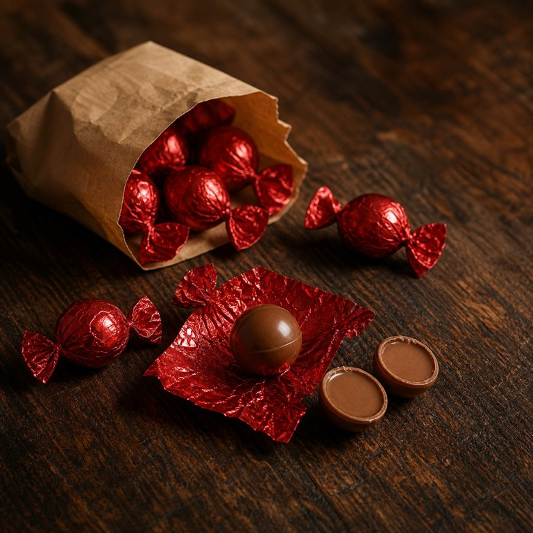

60% 牛奶夹心球

盒盖内侧的便签：一点点像童年那样什么都不用想的甜。纸是红的，扭开就响，一颗化得很快，所以不算数，再来一颗也行。
- 包装
- 红色包装，像个大糖果。手抓着两边一拧，那声不是撕，是纸在两头拧出来的褶皱声，嚓嚓，像小时候的。
- 看
- 打开是一个光滑的巧克力球，光的。中间一条细细的缝合线，模具合上的地方，工业留的一道疤，用拇指摸着比看着明显。
- 闻
- 拧开先到的是鼻子：巧克力香扑上来，是巧克力这个词本来的味道，没有什么复杂的，就是它。
- 入口头两秒
- 整个含进去咬开的话，壳一碎，里面是软的，不是化开的软，是本来就软，一下子铺满。然后是凉，明明是甜的、奶的、暖颜色的东西，舌头上却先一阵凉，像里面藏了一小口空气。甜很多，比黑巧多出十倍去，但不腻，奶把它接住了。
- 化的方式
- 走得快。不是那种一层一层包住不放的化法，是呼一下全化了，什么都没留。
- 余味（大约 4 分钟散完）
- 0 分钟嘴里什么都没剩，只剩香还在鼻腔里挂着。2 分钟鼻腔里那口巧克力香淡下去，舌尖还有一点奶的甜。